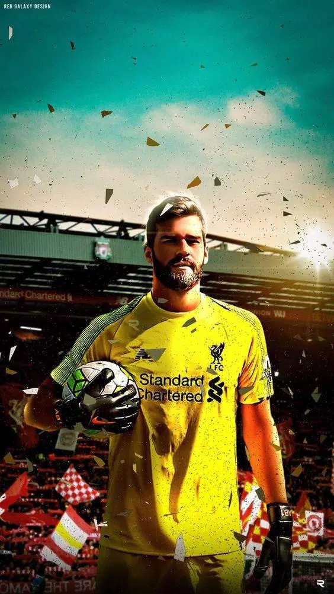

Alison Beker
His life
Date of birth:
02.11.1992
Country:
Brazil
His career
2013-2016
Internacional
2016-2018
Roma
2018-now
Liverpool
Games in Primer League
Appearances
136
Clean sheets
64
Goals
1
Asists
2
Transfer Value
65 million euros
Trophies with clubs
Club world cup (Liverpool)
Champions league (Liverpool)
UEFA Super cup (Liverpool)
Primer league (Liverpool)
Copa Amerika (Brazil)
FA cup (Liverpool)
League cup (Liverpool)
His own trophies
Copa Amerika runner-up🏆 (Brazil)
Word's best Goalkeeper🏆 (Liverpool)
Under-17 World Cup participant🏆 (Brazil)
Goalkeeper of the season🏆 (Brzail)
Goalkeeper of the season🏆 (Liverpool)